第四章:与TPOT一起探索分类
在这一章中，你将继续学习自动化机器学习的实例。通过浏览三个完整的数据集，您将了解如何使用TPOT以自动化的方式处理分类任务。
我们将涵盖基本主题，如数据集加载、清理、必要的数据准备和探索性数据分析。然后，我们将深入探讨TPOT的分类。您将学习如何训练和评估自动分类模型。
在自动训练模型之前，您将看到如何使用基本分类算法(如逻辑回归)获得好的模型。这个模型将作为TPOT超越市场的基准。
本章将涵盖以下主题:
- 将自动分类建模应用于虹膜数据集
- 将自动分类建模应用于Titanic数据集
技术要求
要完成本章，您需要在安装了Python和TPOT的计算机中安装Python和TPOT。参见 第二章 、深入TPOT ，了解环境设置的详细说明。如果分类的概念对你来说是全新的，参考 第一章 、机器学习和自动化的思想。
你可以在这里下载本章的源代码和数据集:https://github . com/packt publishing/Machine-Learning-Automation-with-TPOT/tree/main/chapter 04
将自动分类模型应用于虹膜数据集
让我们从最基本的数据集之一——虹膜数据集(https://en.wikipedia.org/wiki/Iris_flower_data_set)开始，从简单的开始。这里的挑战不是建立一个自动化的模型，而是建立一个能够超越基线模型的模型。虹膜数据集非常简单，即使是最基本的分类算法也可以达到很高的精度。
因此，在这一节中，您应该将重点放在了解分类基础知识上。稍后您将有足够的时间来担心性能:
- As with the regression section, the first thing you should do is import the required libraries and load the dataset. You'll need
numpy,pandas,matplotlib, andseabornfor starters. Thematplotlib.rcParamsmodule is imported to tweak the default stylings.下面是库导入和数据集加载的代码片段:
import numpy as np import pandas as pd import matplotlib.pyplot as plt import seaborn as sns from matplotlib import rcParams rcParams['axes.spines.top'] = False rcParams['axes.spines.right'] = False df = pd.read_csv('data/iris.csv') df.head()下面是由
head()函数返回的输出: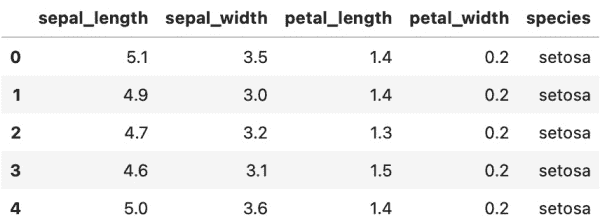图4.1–虹膜数据集的头部
太好了，这正是我们开始工作所需要的。
- The next step is to check if data quality is good enough to be passed to a machine learning algorithm. The first step here is to check for missing values. The following code snippet does just that:
df.isnull().sum()
输出如下图所示:
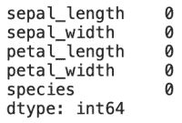图4.2–Iris数据集每列的缺失值计数
似乎没有丢失的值，所以我们可以继续。
- Let's now check for class distribution in the target variable. This refers to the number of instances belonging to each class –
setosa,virginica, andversicolor, in this case. Machine learning models are known to perform poorly if a severe class imbalance is present.以下代码片段可视化了类分布:
ax = df.groupby('species').count().plot(kind='bar', figsize=(10, 6), fontsize=13, color='#4f4f4f') ax.set_title('Iris Dataset target variable distribution', size=20, pad=30) ax.set_ylabel('Count', fontsize=14) ax.set_xlabel('Species', fontsize=14) ax.get_legend().remove()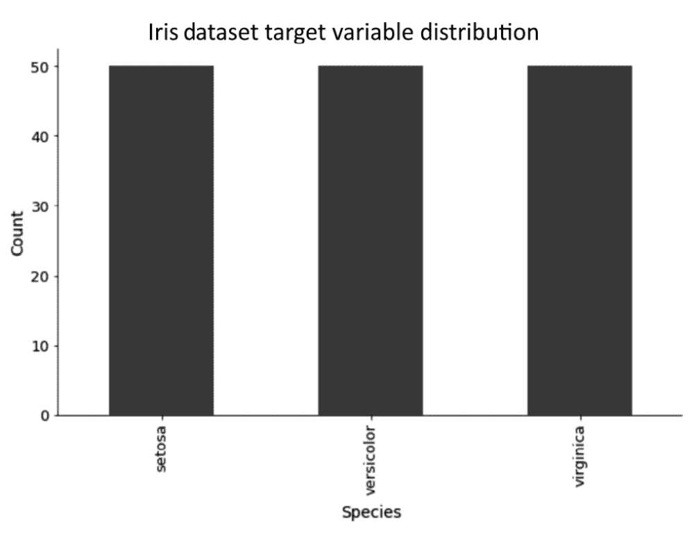图4.3–Iris数据集目标变量分布
虹膜数据集就像它们来的时候一样好——所以再一次，我们没有什么要准备的。
- The final step in the data exploratory analysis and preparation is to check for correlation. A high correlation between features typically means there's some redundancy in the dataset, at least to a degree.
以下代码片段绘制了一个带有注释的关联矩阵:
plt.figure(figsize=(12, 9)) plt.title('Correlation matrix', size=20) sns.heatmap(df.corr(), annot=True, cmap='Blues');相关矩阵如下图所示:
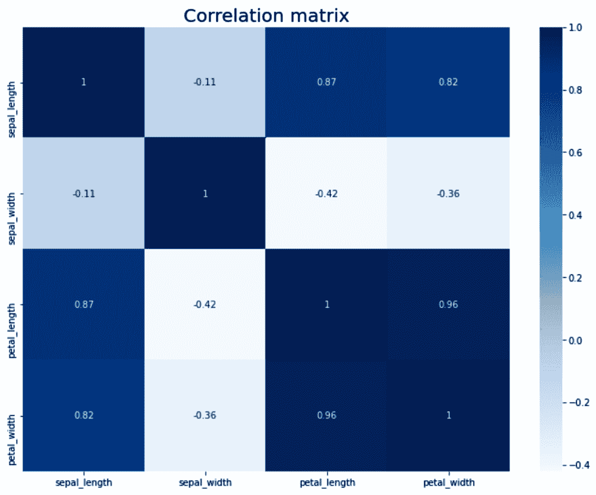图4.4–虹膜数据集的相关矩阵
不出所料，大多数特征之间有很强的相关性。
您现在已经熟悉了Iris数据集，这意味着我们可以继续下一步的建模。
- Let's build a baseline model with a logistic regression algorithm first. It will serve as a starting model that TPOT needs to outperform.
该过程的第一步是训练/测试分割。下面的代码片段就是这样做的，它还打印了两个集合中的实例数:
from sklearn.model_selection import train_test_split X = df.drop('species', axis=1) y = df['species'] X_train, X_test, y_train, y_test = train_test_split( X, y, test_size=0.25, random_state=3 ) y_train.shape, y_test.shape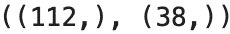图4.5–训练和测试集中的实例数量
接下来让我们构建基线模型。
- As mentioned earlier, we'll use logistic regression for the job. The code snippet below fits a logistic regression model, makes the predictions on the test set, and prints a confusion matrix of actual and predicted values:
from sklearn.linear_model import LogisticRegression from sklearn.metrics import confusion_matrix lm = LogisticRegression(random_state=42) lm.fit(X_train, y_train) lm_preds = lm.predict(X_test) print(confusion_matrix(y_test, lm_preds))
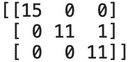from sklearn.metrics import accuracy_score print(accuracy_score(y_test, lm_preds))
准确性得分显示在下图中:
图4.7–Iris数据集逻辑回归测试集的准确性
现在你有了它——97%的准确率，只有一个开箱即用的错误分类，使用最简单的分类算法。让我们看看接下来TPOT是否能超越它。
- Let's build an automated classification model next. We'll optimize for accuracy and train for 10 minutes – similar to what we did in Chapter 3, Exploring Regression with TPOT. The code snippet below imports TPOT, instantiates a pipeline optimizer, and trains the model on the training datasets:
from tpot import TPOTClassifier pipeline_optimizer = TPOTClassifier( scoring='accuracy', max_time_mins=10, random_state=42, verbosity=2 ) pipeline_optimizer.fit(X_train, y_train)
TPOT设法在我的机器上安装了18代，如下图所示:
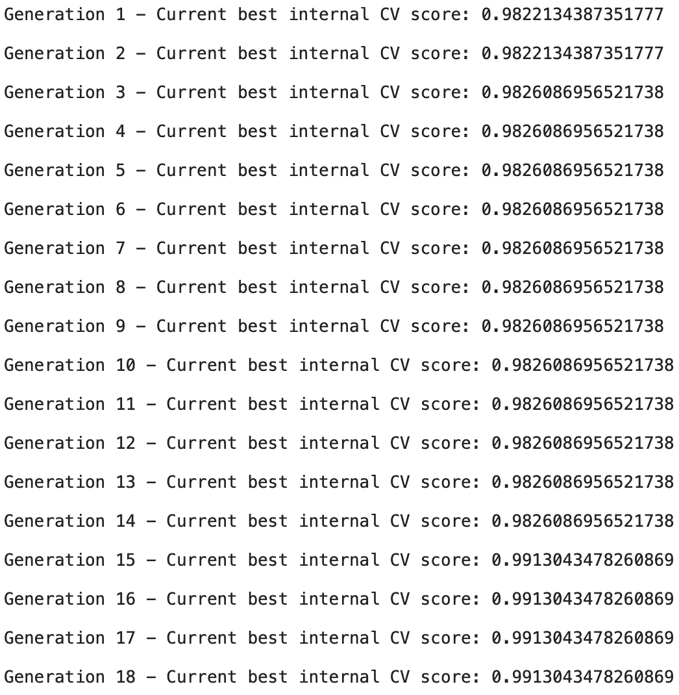图4.8–Iris数据集上TPOT管道优化的输出
- Let's see if training an automated model managed to increase accuracy. You can use the following snippet to obtain the accuracy score:
tpot_preds = pipeline_optimizer.predict(X_test) accuracy_score(y_test, tpot_preds)
准确性得分如下图所示:
图4.9–Iris数据集自动化模型测试集的准确性
如您所见，测试集的准确性没有提高。如果你要做一个目标变量和特征的散点图，你会看到 virginica 和 versicolor 类有一些重叠。这是最有可能的情况，再多的训练也无法正确地对这一个例进行分类。
- There's only two things left to do here, and both are optional. The first one is to see what TPOT declared as an optimal pipeline after 10 minutes of training. The following code snippet will output that pipeline to the console:
pipeline_optimizer.fitted_pipeline_
对应的管道如下图所示:
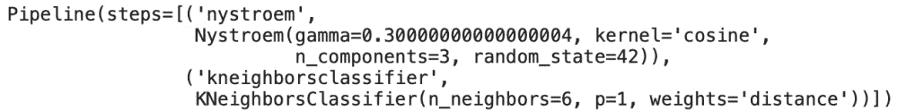图4.10–Iris数据集的最佳TPOT流水线
- As always, you can also export the pipeline with the
export()function:pipeline_optimizer.export('iris_pipeline.py')下图显示了完整的Python代码:
图4.11–虹膜数据集最佳TPOT管道的Python代码
现在你有了它——你的第一个全自动TPOT分类模型。是的，数据集是最基本的，但是原理总是一样的。接下来，我们将在更复杂的数据集上制作自动化模型，因此将有时间让您亲自动手。
将自动分类建模应用于titanic数据集
我们现在要将自动TPOT分类建模应用到稍微复杂一点的数据集。你会被泰坦尼克号数据集(https://gist . githubusercontent . com/michhar/2 DFD 2 de 0d 4 f 8727 f 873422 C5 d 959 fff 5/raw/fa 71405126017 e 6 a 37 bea 592440 B4 bee 94 BF 7 b 9 e/Titanic . CSV)弄脏双手——这个数据集包含泰坦尼克号事故中幸存和未幸存乘客的各种属性和描述。
目标是建立一个自动化模型，能够根据各种输入特征，如乘客类别、性别、年龄、客舱、兄弟姐妹、配偶、父母和子女的数量等，预测乘客是否会在事故中幸存。
接下来，我们将从加载库和数据集开始:
- As always, the first step is to load in the libraries and the dataset. You'll need
numpy,pandas,matplotlib, andseabornto get you started. TheMatplotlib.rcParamsmodule is also imported, just to make the visualizations a bit more appealing.import numpy as np import pandas as pd import matplotlib.pyplot as plt from matplotlib import rcParams rcParams['axes.spines.top'] = False rcParams['axes.spines.right'] = False df = pd.read_csv('data/titanic.csv') df.head()调用
head()函数返回数据集的前五行。它们如下图所示: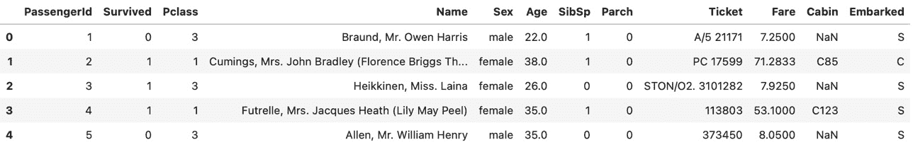图4.12–泰坦尼克号数据集的头部
现在，您可以继续进行探索性数据分析和准备。
- The first step in the exploratory data analysis and preparation is to check for missing values. The following code line does just that:
df.isnull().sum()
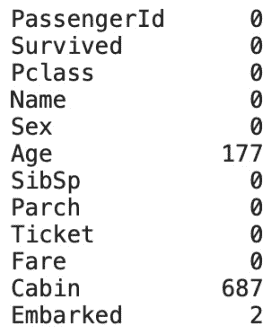图4.13–Titanic数据集的每列缺失值计数
如您所见，数据集中存在大量缺失值。大多数丢失的值都在
Age和Cabin属性中。对于Cabin来说很容易理解——如果乘客没有自己的客舱，那么这个值就是缺失的。我们稍后将处理这些丢失的值，但是现在，让我们将注意力转移到数据可视化上，这样您可以更好地理解数据集。
- To avoid code duplication, let's define a single function for displaying a bar chart. The function shows a bar chart with column counts on top of the bars. It also allows you to specify for which dataset column you want to draw a bar chart, values for the title, x-axis label, and y-axis label, and also offsets for the counts.
def make_bar_chart(column, title, ylabel, xlabel, y_offset=10, x_offset=0.2): ax = df.groupby(column).count()[['PassengerId']].plot( kind='bar', figsize=(10, 6), fontsize=13, color='#4f4f4f' ) ax.set_title(title, size=20, pad=30) ax.set_ylabel(ylabel, fontsize=14) ax.set_xlabel(xlabel, fontsize=14) ax.get_legend().remove() for i in ax.patches: ax.text(i.get_x() + x_offset, i.get_height() + y_offset, i.get_height(), fontsize=20) return ax
在接下来的几页中，您将广泛使用这个函数。目标是可视化分类变量是如何分布的，这样您可以更好地理解数据集。
- To start, let's visualize how many passengers have survived and how many haven't. The previously declared
make_bar_chart()function comes in handy for the job.make_bar_chart( column='Survived', title='Distribution of the Survived variable', ylabel='Count', xlabel='Has the passenger survived? (0 = No, 1 = Yes)' );
可视化显示在下图中:
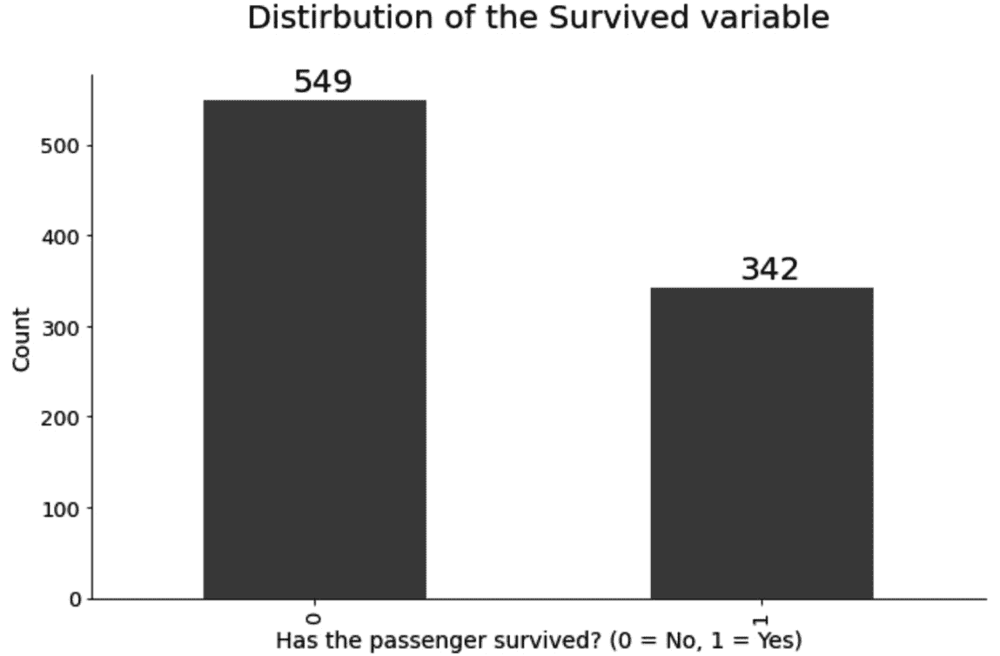图4.14–Titanic数据集的目标类别分布
正如你所看到的，大多数乘客没有在泰坦尼克号事故中幸存。这些信息本身并不能告诉你太多，因为你不知道每个性别、乘客等级和其他属性有多少乘客幸存。
你可以使用
make_bar_chart()功能进行这种类型的可视化。 - Let's continue our data visualization journey by visualizing the number of passengers in each passenger class. You can use the same
make_bar_chart()function for this visualization. Just make sure to change the parameters accordingly.下面的代码片段显示了每个乘客级别的乘客数量。班级人数越少越好——更贵的机票，更好的服务，谁知道呢，也许生存的机会更高:
make_bar_chart( column='Pclass', title='Distirbution of the Passenger Class variable', ylabel='Count', xlabel='Passenger Class (smaller is better)', x_offset=0.15 );
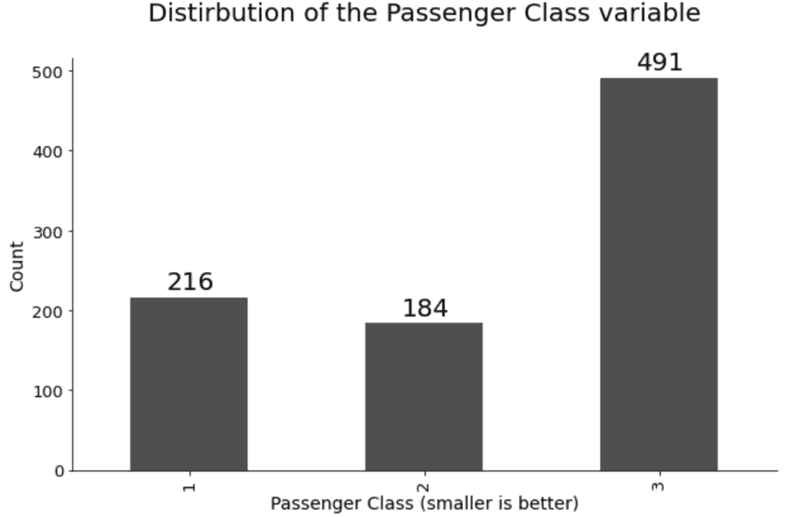图4.15-每个乘客等级的乘客数量
- For the next step in the data visualization phase, let's see how the
Sexattribute is distributed. This will give us insight into whether there were more women or men on board and how large the difference was.以下代码片段实现了可视化:
make_bar_chart( column='Sex', title='Distirbution of the Sex variable', ylabel='Count', xlabel='Gender' );
可视化如下图所示:
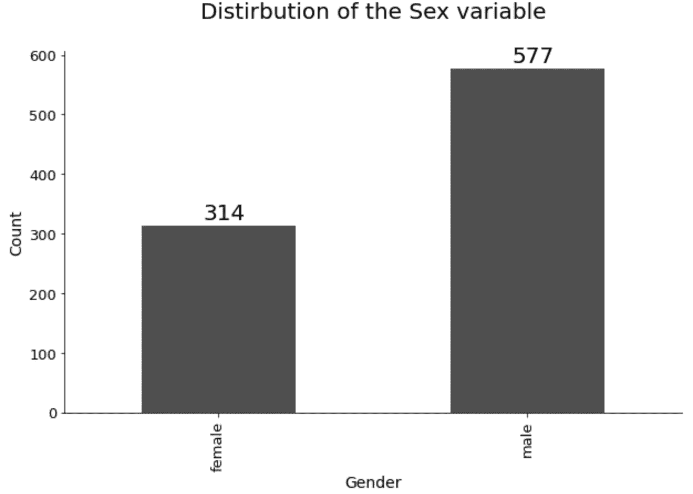图4.16-每种性别的乘客数量
如你所见，船上肯定有更多的男人。这与之前的可视化中得出的结论有关，我们得出的结论是船上有许多工人。
大多数工人都是男性，所以这种可视化是有意义的。
- Let's take a little break from the bar charts and visualize a continuous variable for change. The goal is to make a histogram of the
Fareattribute, which will show the distribution of the amounts paid for the ticket.以下代码片段为提到的属性绘制了一个直方图:
plt.figure(figsize=(12, 7)) plt.title('Fare cost distribution', size=20) plt.xlabel('Cost', size=14) plt.ylabel('Count', size=14) plt.hist(df['Fare'], bins=15, color='#4f4f4f', ec='#040404');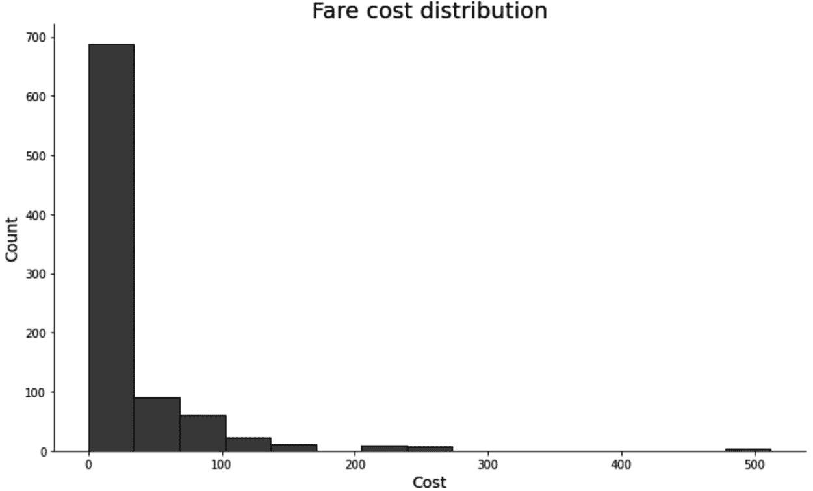图4.17-票价变量的分布
看起来大多数乘客花了30美元或更少的钱买了一张票。一如既往的有极端的案例。似乎一名单身乘客为这次旅行支付了大约500美元。考虑到事情的结局，这不是一个明智的决定。
- Let's do something a bit different now. The
Nameattribute is more or less useless in this format. But if you take a closer look, you can see that every value in the mentioned attribute is formatted identically.这意味着我们可以保留第一个逗号后的单词，并将其存储在一个新的变量中。我们称这个变量为
Title,因为它代表乘客的头衔(例如，先生，小姐。，以此类推)。下面的代码片段将Title值提取为一个新属性，并使用
make_bar_chart()函数直观地表示泰坦尼克号乘客的不同头衔:df['Title'] = df['Name'].apply(lambda x: x.split(',')[1].strip().split(' ')[0]) make_bar_chart( column='Title', title='Distirbution of the Passenger Title variable', ylabel='Count', xlabel='Title', x_offset=-0.2 );结果如下图所示:
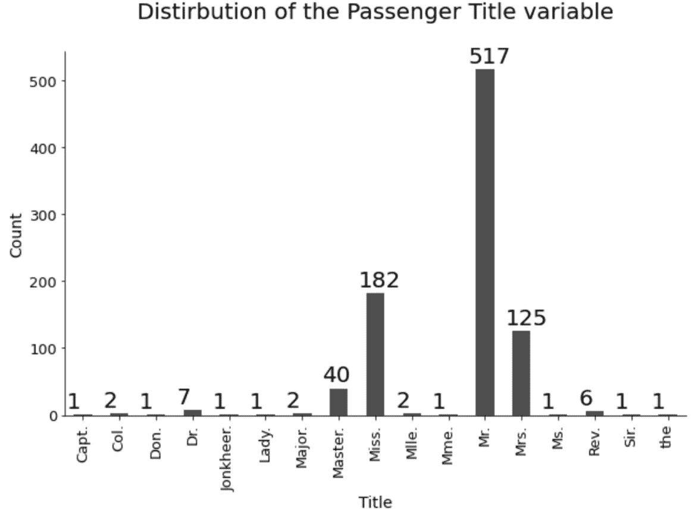图4.18–乘客头衔的分布
同样，这些是预期的结果。大多数乘客都有共同的头衔，比如先生和小姐。他们中只有少数人有独特的头衔。您可以保持该列不变，或者将其转换为二进制列——如果标题是常用的，则值为零，否则值为一。接下来您将看到如何做到这一点。
- That's about enough with regards to the exploratory data analysis. We've made quite a few visualizations, but you can always make more on your own.
现在是时候为机器学习准备数据集了。这些步骤描述如下:
a)删除无用的列—
Ticket和PassengerId。第一个只是虚拟字母和数字的集合，对预测建模毫无用处。第二个是一个任意的ID，很可能是用数据库序列生成的。你可以通过调用drop()函数来移除这两者。b)将
Sex属性中的值重新映射为整数。文本值男和女不能直接传递给机器学习算法。某种形式的转换是必须的——所以用0代替男性，用1代替女性。replace()功能是这项工作的完美候选。c)使用之前生成的
Title列，并将其转换为二进制1–如果标题是常见的(例如，先生，小姐),则值为零。和夫人)和一个否则。然后，您可以将该列重命名为更合适的名称，比如Title_Unusal。不再需要Name列，因此将其删除。d)通过将该属性转换为二进制1来处理
Cabin列中的缺失值——如果舱室的值缺失，则该值为零，否则为1。将这个新列命名为Cabin_Known。之后，您可以删除Cabin列，因为不再需要它，并且它不能传递给机器学习模型。e)用
Embarked属性创建虚拟变量。此属性指示乘客上船的港口。你可以判断这个属性是否必要，但是我们将让TPOT来决定。声明虚拟变量后，将它们连接到原始数据集并删除Embarked列。f)以某种方式处理
Age属性中缺失的值。有许多复杂的方法，如 KNN估算或 MissForest估算，但为了简单起见，只需用简单的平均值估算缺失值。以下代码片段向您展示了如何应用所有提到的转换:
df.drop(['Ticket', 'PassengerId'], axis=1, inplace=True) gender_mapper = {'male': 0, 'female': 1} df['Sex'].replace(gender_mapper, inplace=True) df['Title'] = [0 if x in ['Mr.', 'Miss.', 'Mrs.'] else 1 for x in df['Title']] df = df.rename(columns={'Title': 'Title_Unusual'}) df.drop('Name', axis=1, inplace=True) df['Cabin_Known'] = [0 if str(x) == 'nan' else 1 for x in df['Cabin']] df.drop('Cabin', axis=1, inplace=True) emb_dummies = pd.get_dummies(df['Embarked'], drop_first=True, prefix='Embarked') df = pd.concat([df, emb_dummies], axis=1) df.drop('Embarked', axis=1, inplace=True) df['Age'] = df['Age'].fillna(int(df['Age'].mean())) df.head()您可以通过检查下图来查看准备好的数据集:
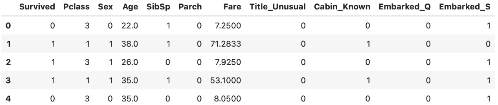图4.19-准备好的泰坦尼克号数据集
关于数据准备，这就是你要做的全部工作。不需要缩放/标准化，因为TPOT将决定该步骤是否必要。
我们将很快开始预测建模——只剩一步了。
- Before you can train a classification model, you'll have to split the dataset into training and testing subsets. Keep in mind the
random_stateparameter – use the same value if you want the same data split:from sklearn.model_selection import train_test_split X = df.drop('Survived', axis=1) y = df['Survived'] X_train, X_test, y_train, y_test = train_test_split( X, y, test_size=0.25, random_state=42 ) y_train.shape, y_test.shape最后一行代码打印训练和测试子集中的实例数量。您可以在下图中看到这些数字:
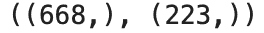图4.20–训练和测试集中的实例数量(Titanic)
现在，您已经准备好训练预测模型了。
- Let's start with a baseline model – logistic regression. We'll train it on the train set and evaluate it on the test set. The following code snippet trains the model and prints the confusion matrix:
from sklearn.linear_model import LogisticRegression from sklearn.metrics import confusion_matrix lm = LogisticRegression(random_state=42) lm.fit(X_train, y_train) lm_preds = lm.predict(X_test) print(confusion_matrix(y_test, lm_preds))
您可以在下图中看到混淆矩阵:
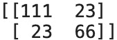图4.21-逻辑回归混淆矩阵(Titanic)
看起来假阳性和假阴性的数量是一样的(23)。如果我们把比率考虑进去，就会有更多的假阴性。在翻译中，基线模型更有可能说乘客幸存了，即使他们没有。
- Interpreting the confusion matrix is great, but what if you want to look at a concrete number instead? Since this is a classification problem, you could use accuracy. But there's a "better" metric – F1 score. The value for this metric ranges between 0 and 1 (higher is better) and represents a harmonic mean between precision and recall.
下面是用Python计算的方法:
from sklearn.metrics import f1_score print(f1_score(y_test, lm_preds))
测试集的F1分值如下图所示:
图4.22–测试集上的逻辑回归F1得分(Titanic)
- In a similar fashion as before, we'll train an automated classification model for 10 minutes. Instead of accuracy, we'll optimize for the F1 score. By doing so, we can compare the F1 scores of an automated model with the baseline one.
下面的代码片段在定型集上对模型进行定型:
from tpot import TPOTClassifier pipeline_optimizer = TPOTClassifier( scoring='f1', max_time_mins=10, random_state=42, verbosity=2 ) pipeline_optimizer.fit(X_train, y_train)
在下图中，您可以看到培训期间打印在笔记本上的输出。TPOT设法在10分钟内训练了7代，分数随着模型的训练而增加:
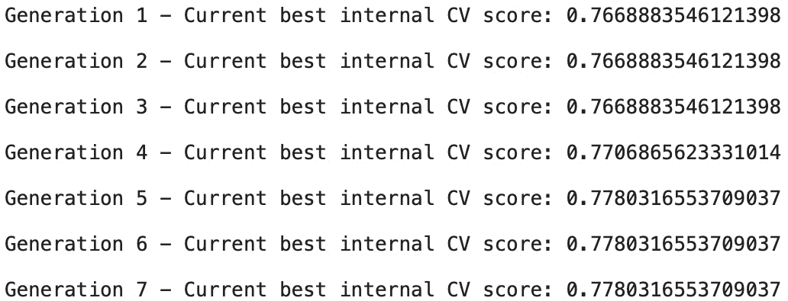图4.23-TPOT管道优化输出(泰坦尼克号)
你可以让模型训练超过10分钟。尽管如此，这个时间框架应该足以超越基线模型。
- Let's take a look at the value of the F1 score on the test set now. Remember, anything above 0.7415 means TPOT outperformed the baseline model.
以下代码片段打印F1分数:
pipeline_optimizer.score(X_test, y_test)
对应的F1分数如下图所示:

图4.24–TPOT优化模型F1在测试集(Titanic)上的得分
看起来TPOT的表现超过了基线模型——正如预期的那样。
- In case you're more trustworthy of basic metrics, such as accuracy, here's how you can compare it between baseline and automated models:
tpot_preds = pipeline_optimizer.predict(X_test) from sklearn.metrics import accuracy_score print(f'Baseline model accuracy: {accuracy_score(y_test, lm_preds)}') print(f'TPOT model accuracy: {accuracy_score(y_test, tpot_preds)}')相应的准确度分数如下图所示:
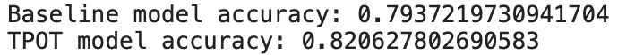图3.25–基准模型和TPOT优化模型在测试集(Titanic)上的精确度
正如你所看到的，简单的准确性指标讲述了一个相似的故事——TPOT建立的模型仍然比基线模型好。
- We are near the end of this practical example. There are two optional things left to do. The first one is to take a look at the optimal pipeline. You can obtain it with the following line of code:
pipeline_optimizer.fitted_pipeline_
最佳管道如下图所示:
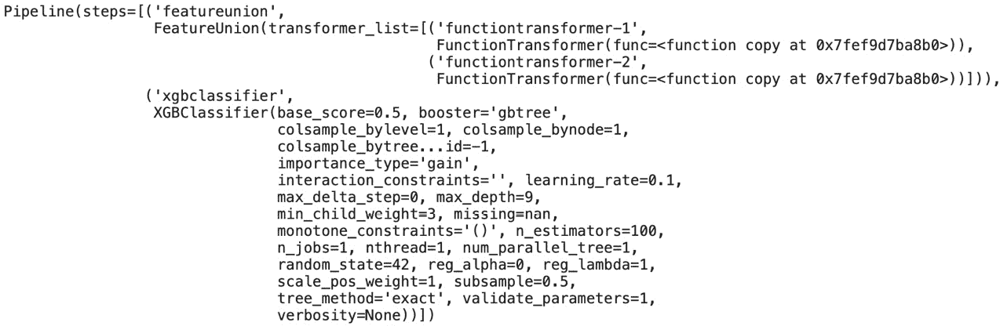图4.26-TPOT优化管道(泰坦尼克号)
- Finally, you can convert the optimal pipeline into Python code. Doing so makes the process of sharing the code that much easier. You can find the code for doing so here:
pipeline_optimizer.export('titanic_pipeline.py')下图显示了自动化管道的完整源代码:
图4.27-优化的TPOT管道(泰坦尼克号)的源代码
而 以自动化的方式解决了泰坦尼克号数据集上的分类问题。现在，您已经构建了两个全自动分类机器学习解决方案。接下来让我们总结这一章。
总结
这是本书的第二个实践章节。通过两个著名数据集上的深入示例，您已经了解了如何以自动化方式解决分类机器学习任务。毫无疑问，您现在已经准备好使用TPOT来解决任何类型的分类问题。
到目前为止，您已经知道如何解决回归和分类任务。但是平行训练呢？神经网络呢？接下来的章节， 第五章 ，与TPOT和达斯克的平行训练，将教你什么是平行训练，以及如何与TPOT利用平行训练。稍后，在 第6章 ，深度学习入门——神经网络速成班中，您将强化您的基本深度学习和神经网络知识。作为锦上添花，你将在 第七章中与TPOT一起学习如何使用深度学习，与TPOT一起学习神经网络分类器。
请使用本章介绍的工具和技术来练习自动解决分类问题。
问一个
- 你能用条形图研究分类变量的分布吗？解释一下。
- 解释混淆矩阵和术语真阳性、真阴性、假阳性和假阴性。
- 什么是精准？用一个实际的例子来解释。
- 什么是回忆？用一个实际的例子来解释。
- 准确率和F1成绩有什么区别？什么时候你会使用F1超过准确性？
- F1成绩中的“1”是什么意思？这个数字能改吗？在这种情况下会发生什么？
- 在训练过程中，TPOT会输出训练集或测试集的评分标准值吗？解释一下。